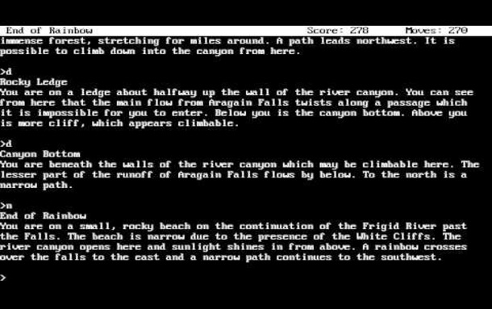
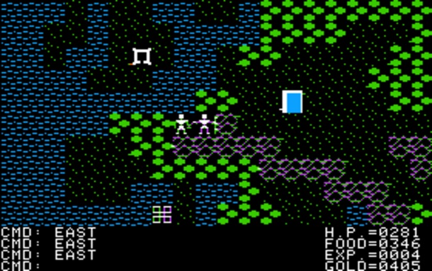
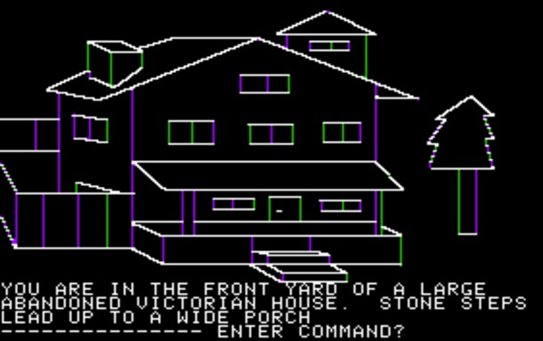
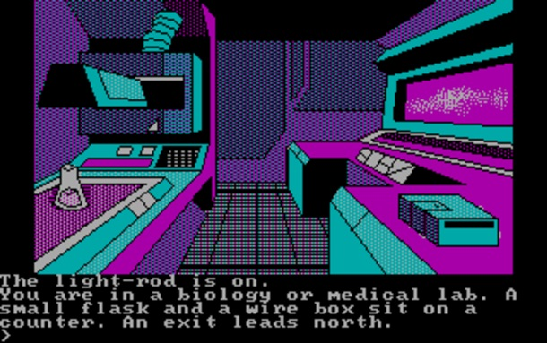
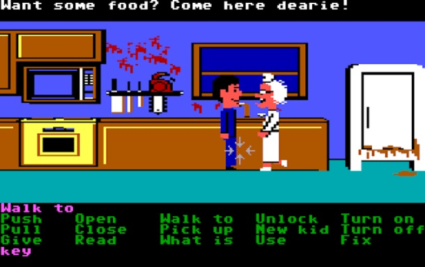
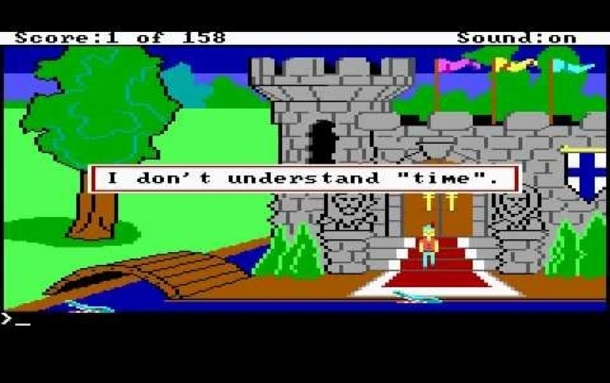
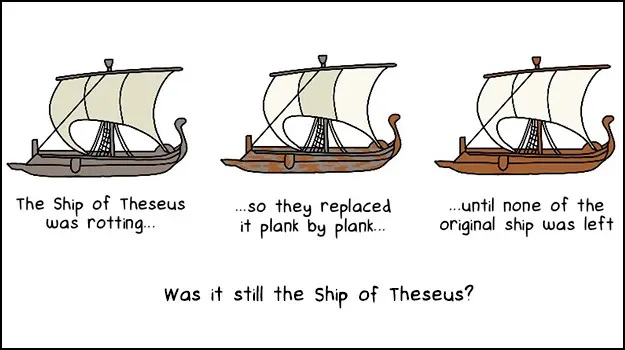

The Theseus of Gaming
My original thought was to frame this article as "The Ontology of Gaming," but, while writing it, the Ship of Theseus came to mind. This was a thought experiment around the metaphysics of identity and it seemed quite apropos. I was also going to title this article "The Identity of Gaming" but the subject was a little more broad than just that.
Before looking at Theseus and his ship, let's actually consider some gaming history.
The Initial Identity of Games
As the microcomputer revolution started up and progressed from, say, 1977 to 1984, there were certain categories of games that served to frame identities. Those games were ultimately growing out of what, at the time, was a tradition of text-based games that were finding their own identity. Those earlier text-based games started to be called things like:
- simulation game
- participation novel
- electronic novel
- compunovels
- interactive fiction
The name that stuck the most, and still does, is "text adventures." The idea of the textual adventure was interesting because it allowed for a distinct identity when technology improved and "graphical adventures" started to come on the scene. What we ended up with as the early microcomputer years wore on were certain categories.
- There was the textual adventure.
- There was the graphical adventure.
- There was the computer role-playing game (CRPG) adventure.
- There was the action adventure.
Notice how everything is an "adventure." I suppose you could frame that as a core identity, but then I'm getting a bit ahead of myself. So instead of focusing on "adventure," let's focus on that "graphical" part for a bit.
So we had something like Zork 1:
And you had a CRPG like Ultima 1:
And you had an action game like Karateka:

Notice something there? The CRPG and the action games also used graphics. But the CRPG tended to focus on strategy and tactics, usually around a team of characters where there's a heavy reliance of statistics-driven combat. The action adventure tended to focus more on reflex-oriented activities, such as jumping around platforms or using combinations of "moves" to fight enemies.
So the point is: why is "graphical adventure" slotted out on its own? That's not really a distinct identity, right? In fact, certain textual adventures could show graphical pictures, such as Mystery House:
Or Oo-Topos:
Yet the inclusion of visuals didn't make them graphical adventures in their identity. But why not? Well, the "true" graphical adventures replaced descriptive text with pictures and a textual interface (usually a parser) with a joystick or mouse. With the graphical adventures relying more on the mouse, they also came to be called "point-and-click adventures." Something like Maniac Mansion is a good example:
Here there wasn't a parser but notice those keywords at the bottom that you selected. Effectively you would build a command to interact with the game world by clicking on words as opposed to typing them into a parser mechanism.
Yet, then again, you had something like King's Quest 1 which combined text and graphics and didn't really rely on the "point-and-click" interface so much, at lesat in terms of the keywords:
Here the game did provide an actual command prompt at the bottom that allowed you to type in game commands but also allowing for fluid control of the character within the game interface.
So what was the common element? What was the identity?
The Evolving Identity of Games
There was a common identity that could be framed around gameplay — not so much the game mechanics, but rather with the ways the games played out.
Here this meant (usually) dealing with puzzle-solving and exploration. But more than that, the focus was on the emphasis on story. There was a coherent storyline or narrative arc that went beyond just a set of quests and certainly well beyond doing nothing more than learning a set of mechanics.
We're starting to get into definitions and definitions can be tricky. Jimmy Maher, also known as "The Digital Antiquarian", tackled this subject a bit in his post Ludic Narrative née Storygame. That post started me thinking on this and I made a few comments there to that effect. So my content here certainly owes a debt of gratitude to Jimmy's. More specifically, Jimmy brings up four framing points to make up the identity of what he considers a "ludic narrative":
- The work must be directly and obviously interactive.
- A computational simulation (a "storyworld") must enable that narrative.
- The player must play the role of an individual (a distinct persona) in the storyworld.
- There must be a coherent story arc and it must be possible to complete that story.
We don't have to get into what games, or kinds of games, the above may or may not disqualify as that would require delving into a lot of gaming history. That said, in terms of looking at the above list at least a little bit, consider that some of the above games had you taking on the role of a nameless person involved in some story, even if the story was a bit threadbare.
- Zork had you essentially exploring the ruins of a kingdom with the sole aim being to find a certain number of treasures.
- Mystery House had you exploring a more restricted domain — literally just a house — and rather than treasures, you found clues to determine the identity of a killer.
- Oo-Topos ups the stakes a bit: you have to escape imprisonment on a planet so that you can deliver something that will literally save the human race from extinction.
- Karateka has the anonymous hero ascending a mountain into the fortress of a villain named Akuma to rescue Princess Mariko.
- Ultima 1 has you trying to stop the evil wizard Mondain after being hired by Lord British to find some way to circumvent the wizard's immortality before he destroys and/or enslaves a continent.
All nameless adventurers undertaking some quest within the context of an overarching story. What you explore may be different — a house, a prison, a mountain fortress, an underground dungeon — but the basic idea is the same. In addition to that dynamic, some of the games focused on very specific characters or even multiple characters.
- King's Quest 1 has you play as Sir Graham who is sent on a quest by King Edward to save the Kingdom of Daventry by finding three legendary treasures.
- Maniac Mansion has you initially play as Dave Miller who, along with friends that you can also play as, must rescue his girlfriend, Santy Pantz, from a mad scientist named Fred Edison and, along the way thwart an effort to take over the world.
Notice how those games all share a few themes and motifs (collecting certain treasures), usually saving something (world, continent) or someone (a captive). So, is that the identity? Is that what makes these "adventure games"?
Well, notice that the "plot" of Karateka was basically replicated much earlier by Donkey Kong, with the hero (at least given a name, "Jumpman", only later to become Mario) trying to rescue the "damsel in distress", who was known as Pauline. So does this mean Donkey Kong is just as much an "adventure game"?
Identity is Contextual
We have to consider our "adventure game" concept as a spectrum (something that can be "more or less an adventure game") as opposed to framing it as a dichotomy (something that can "either be an adventure game or not").
What this leads us to is two broad approaches. We can try to come up with a "scientific" definition of what "adventure games" are; this can serve as a checklist that includes or excludes. Or we can have a heuristic definition of what "adventure games" are, where we essentially have to allow the boundaries to blur a bit. That second approach is a much harder realm to occupy because it leads to people having angst when they feel boundaries are being violated.
The Context of Identity
I started off the gaming discussion around a very specific context: that of the early microcomputer industry and specifically within the context of roughly 1977 to 1984. To be sure, the modern world of gaming is very different from that of that timeframe; it has evolved. And that helps us see that identity can be retained even over wide swathes of changes. As Jimmy Maher has said in his The Digital Antiquarian series:
If some of the traditionally story-oriented forms of game have retreated from the mainstream, their absence is more than made up for by the piles of first-person shooters, real-time strategy games, and casual tycoon games that now also want to be narrative experiences to one degree or another.
It's certainly the case that the "pure textual adventure" and the "pure graphical adventure" have somewhat retreated. The former is no longer commercially marketed to any great extent and the latter is in a similar situation. What has happened is that all of those above aspects of gaming identity have somewhat merged together to form a cohesive experience. All are still adventures; they simply combine the aspects that previously differentiated them.
Again: there can be a scientific definition and a heuristic definition. This gets into "feelings." Does a certain game feel like a story-based "adventure game" even when it's perhaps not billed that way? And if it provides the experience required, does it matter?
Theseus Emerges!
Now finally I get get to the point of the title of this article.
There's a thought experiment that is referred to by the name "Ship of Theseus" and it raises some of the questions about identity that I explored above.
The basic story goes like this: Theseus, the legendary founder of Athens, had an impressive ship in which he had fought numerous battles. The Athenians wanted to honor his contributions to the state. So they preserved his ship in their port. Now, the problem is that occasionally a plank or part of the mast would decay beyond repair. And at some point that piece would have to be replaced to keep the ship in good order. And this continued over the course of much time and, thus, many repairs.
Notice how we're already at a question of identity: is it the same ship after we've replaced one of the planks? What about after we've replaced 25% of the planks? 50%? What about after we've replaced all of the planks? Thomas Hobbes took this to another level and asked: What if we then took all the old planks and built a ship out of them? Would that new ship, built entirely out of the old ship's material, then suddenly become the Ship of Theseus?
Narrowly speaking, these are all questions about identity. This is effectively a bit of ontogeny; it's looking at the changes something undergoes over time while still retaining its core identity. Even more broadly, these are questions about ontology, our basic view of what exists in the world. What kinds of things are there at all? And how do we know it's that thing (its identity) versus some other thing?
What this thought experiment shows us is that when we ask about the identity of something, a whole bundle of stated and unstated assumptions tend to come along for the ride. We are assuming that there are things called "ships" or "games" and things called, say, "adventure games" and that these things have some persistence over time.
And everything goes fine with that view of the world — until we come up against situations that put a strain on how we define these kinds of objects or these concepts. The question then becomes: what are we allowing to strain the definitions? And are we correct in perceiving that strain as a problem that's worth having and thus trying to solve?